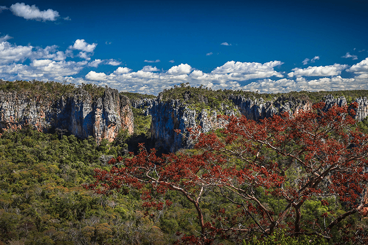

PrincipalGruta do Janelão
★ Principal atrativo
Maior estalactite do mundo
DificuldadeSemipesado
Distância4,8 km
Tempo5h30
Perna da Bailarina com 28m. Paredão com pinturas rupestres na entrada.
Iniciar roteiro